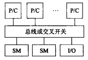
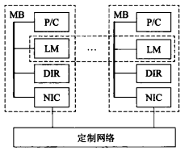
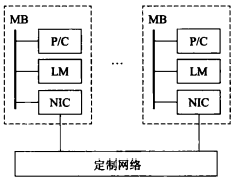
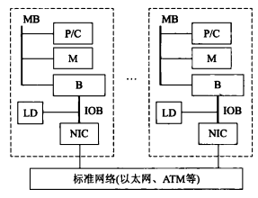

并行计算机结构模型
按照编程模型可以分为三类：共享地址、消息传递和数据并行。
共享地址类并行机结构
根据访存模型又可分为两类：均匀存储访问(UMA)和非均匀存储访问(NUMA)。
对称多处理机(SMP)
属于UMA，可以对称地访问共享存储器和I/O设备。具有单地址空间。UMA的物理存储器均被所有处理器均匀共享。所有处理器访问任何存储单元时间相同。

分布共享存储处理机(DSM)
属于NUMA，与SMP的主要差别是访存模型，物理上分布在各个节点中的局部存储器形成了一个共享的存储器。处理器访问存储器时间不同，访问本地存储器较快，而访问外地的存储器较慢。

消息传递类并行机结构
消息传递类的结构的访存模型为非远程存储访问(NORMA)，NORMA的特点是所有存储器都是私有的且不支持远程存储器的访问
大规模并行处理机(MPP)
它与DSM的区别是MPP为多地址空间，而DSM为单地址空间，即访存模型的区别。

工作站机群(COW)
COW和MPP的差别主要是各节点通过商品网络互连而非专用定制网络。并且每个节点都是完整的工作站。

数据并行
常规串行计算机称为单指令单数据流(SISD)。单指令多数据流称为(SIMD)，还有多指令多数据流(MIMD)。